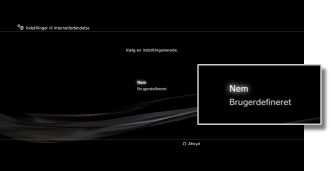
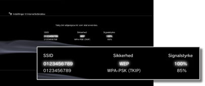
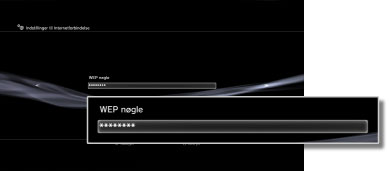

Indstillinger > Netværksindstillinger > Indstillinger til Internetforbindelse (trådløs forbindelse)
Indstillinger til Internetforbindelse (trådløs forbindelse)
Denne funktion er kun tilgængelig på PS3™-systemer, der er udstyret med den trådløse LAN-funktion.
Indstil metoden til oprettelse af forbindelse til internettet. Indstillingerne for internetforbindelsen varierer, afhængigt af det aktuelle netværksmiljø og de aktuelle enheder. Følgende procedure beskriver en typisk opsætning ved trådløs tilslutning til internettet.
1. |
Kontroller, at adgangspunktet er indstillet korrekt. |
|---|---|
2. |
Kontroller, at der ikke er sluttet et Ethernet-kabel til PS3™-systemet. |
3. |
Vælg |
4. |
Vælg [Indstillinger til Internetforbindelse]. |
5. |
Vælg [Nem].  |
6. |
Vælg [Trådløs].
|
7. |
Vælg [Søge].
|
8. |
Vælg det ønskede adgangspunkt.  |
9. |
Kontroller adgangspunktets SSID. |
10. |
Vælg de ønskede sikkerhedsindstillinger.
|
11. |
Indtast din krypteringsnøgle. Krypteringsnøglen vises med stjerner [*]. Hvis du ikke kender krypteringsnøglen, skal du kontakte den person, der konfigurerer og vedligeholder adgangspunkterne.  Indtast krypteringsnøglen, og bekræft netværkskonfigurationen for at få vist en liste over indstillinger. |
12. |
Gem indstillingerne. |
13. |
Afprøv forbindelsen. |
14. |
Bekræft resultaterne af forbindelsestesten. |
 (Indstillinger) >
(Indstillinger) >  (Netværksindstillinger).
(Netværksindstillinger).


Tips
- Hvis forbindelsen mislykkes, skal du følge instruktionerne på skærmen for at kontrollere dine indstillinger. Læs også oplysningerne fra internetudbyderen og de vejledninger, der fulgte med den pågældende netværksenhed.
- Hvis du afprøver forbindelsen lige umiddelbart efter, at du har valgt [Automatisk] > [AOSS™] i trin 7, er routerindstillingerne muligvis ikke trådt helt i kraft, og der kan derfor ikke oprettes forbindelse. Vent ca. 1 til 2 minutter, før du afprøver forbindelsen.